pyR2D2 を使うための環境設定
pyR2D2 を使うための Python の環境と、計算の一覧を Google スプレッドシートに送るための設定を説明する。 pyR2D2 そのもののインストールは pyR2D2 にある。 R2D2 (Fortran) を計算するためのコンパイラ・MPI・FFTW の準備は R2D2 マニュアル にある。
Pythonコードの環境設定
各自の方法でpythonをインストールすれば良いが、ここではminiforgeを用いる方法を説明する。 miniforgeをインストールし、以下に示すモジュール群をインストールする。 MacとLinuxで共通する部分が多いのでまとめて説明を記す。
詳しくは miniforgeのGitHubレポジトリ を参照する。以下のコマンドでインストーラーをダウンロードする。
- Mac
curl -L -O "https://github.com/conda-forge/miniforge/releases/latest/download/Miniforge3-$(uname)-$(uname -m).sh"
- Linux
wget "https://github.com/conda-forge/miniforge/releases/latest/download/Miniforge3-$(uname)-$(uname -m).sh"
インストールするディレクトリは
/home_directory/miniforge3とする(デフォルト)。 インストール後、シェルの初期化ファイルに以下の行を追加して、miniforgeのbinディレクトリにPATHを通す。conda環境は重いので、必要なときにのみPATHを通すことを推奨する。 スパコンのログインノードなどでもインストール方法は共通である。
ipythonの初期設定
以下は必須ではないが、ipythonを使う時の初期設定ファイルである。
~/.ipython/profile_default/startup/00_first.py
というファイルを作りそこに以下のように記す。
import sys, os
import matplotlib.pyplot as plt
import numpy as np
from matplotlib.pyplot import pcolormesh,plot,clf,close
from numpy import sin,cos,tan,arcsin,arccos,arctan,exp,log,log2,log10,mod,sqrt,absolute,sinh,cosh,tanh,pi,arange
plt.ion()
from IPython.core.magic import register_line_magic
@register_line_magic
def r(line):
get_ipython().run_line_magic('run', ' -i ' + line)
del r
最後に記した設定によって、
r (Pythonスクリプト名)
とするだけで、スクリプトを実行できるようになる。
Googleスプレッドシート利用
計算設定などをGoogleスプレッドシートにまとめておくと便利である。 R2D2では、Pythonから直接Googleスプレッドシートに送信する方法を提供しているので、利用したい方は検討されたい。
手順については、 こちら を参考にしたが、少し手順が違うのでこのページでも解説する。
まずは関連するモジュールのインストール。
pip install gspread
pip install google-auth
プロキシなどの影響でpipが使えない時は以下のようにする
gspreadのインストール
git clone git@github.com:burnash/gspread.git
cd gspread
ipython setup.py install
oauth2clientのインストール
git clone git@github.com:googleapis/oauth2client.git
cd oauth2client
ipython setup.py install
プロジェクト作成
ウェブブラウザで https://console.developers.google.com/cloud-resource-manager?pli=1 にアクセス。

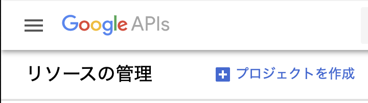
「プロジェクトを作成」として、プロジェクトを作成

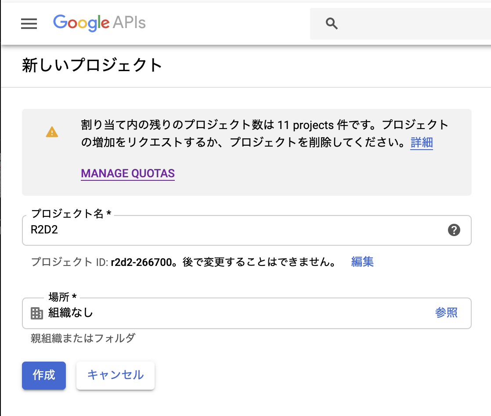
プロジェクト名はR2D2, 場所は組織なしとする。
API有効化

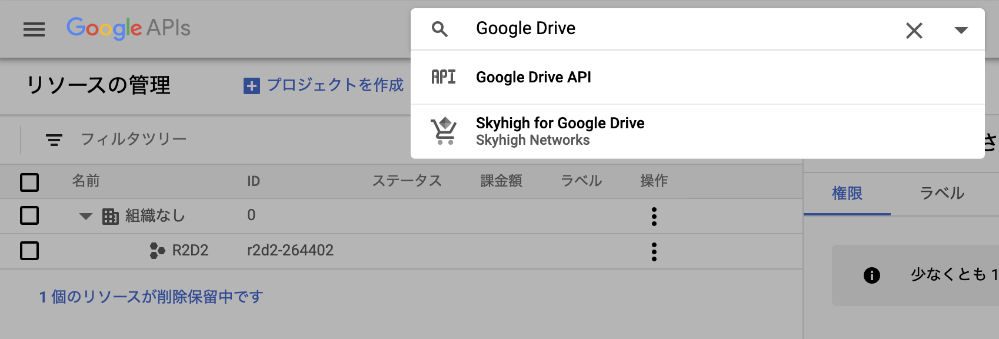
次に検索窓にGoogle Driveと打ち込んで、Google DriveのAPIを検索

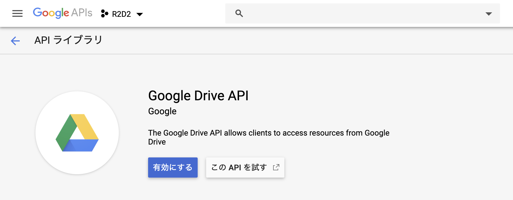
Google Drive APIを有効にする。

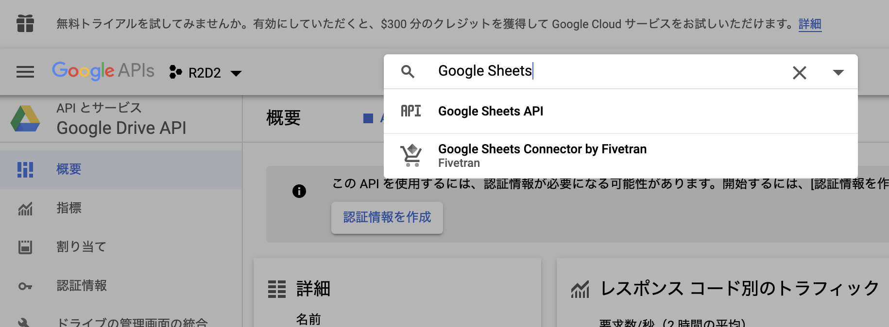
同様にGoogle Sheetsと検索

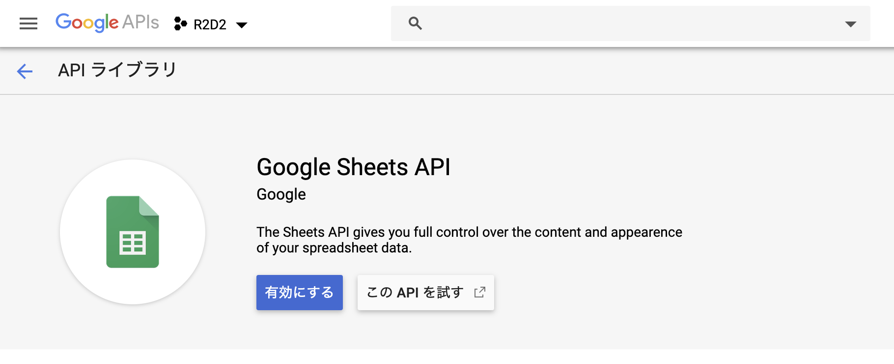
Google Sheets APIを有効化
サービスアカウント作成

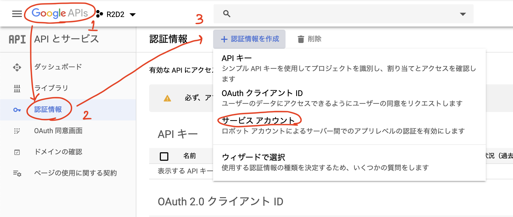
Google APIロゴ → 認証情報 → サービスアカウントとたどる。

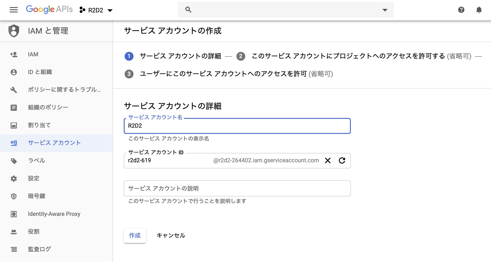
サービスアカウント名はR2D2とする

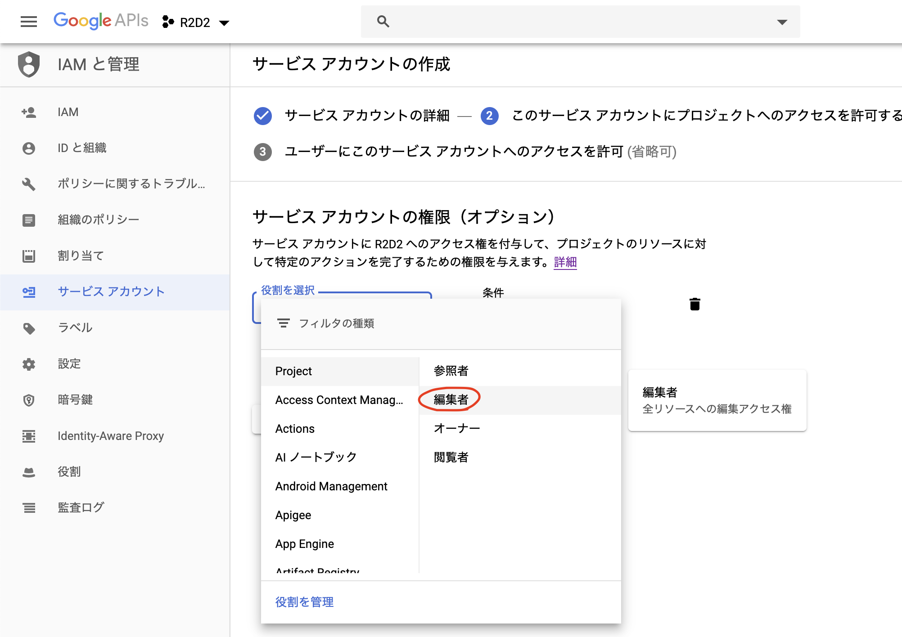
役割は編集者を選択

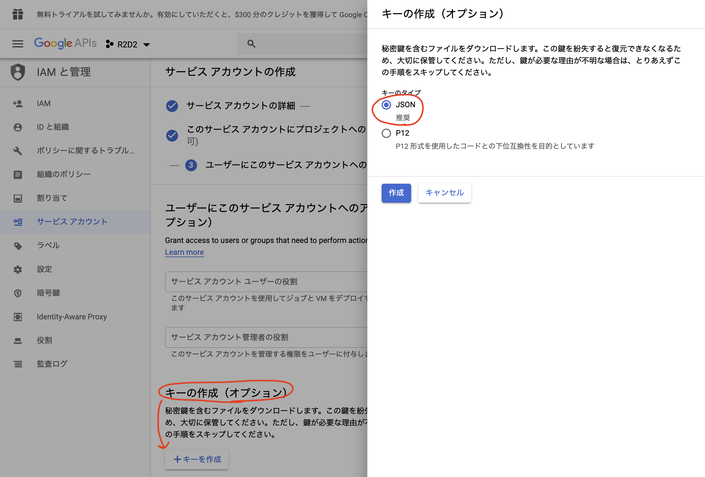
キーの生成ではJSONを選択し、キーを生成する。 ダウンロードしたファイルは、使用する計算機のホームディレクトリにjsonというディレクトリを作成し、その下に配置する。そのディレクトリには、このjsonファイル以外には何も置かないこと。
スプレッドシート作成
以下のウェブサイトからGoogleスプレッドシートを作成 https://docs.google.com/spreadsheets/create
名前はプロジェクト名とする。R2D2では、pyディレクトリの上のディレクトリ名を読みそれをスプレッドシートの名前として情報を送るので、ディレクトリと同じ名前にする。

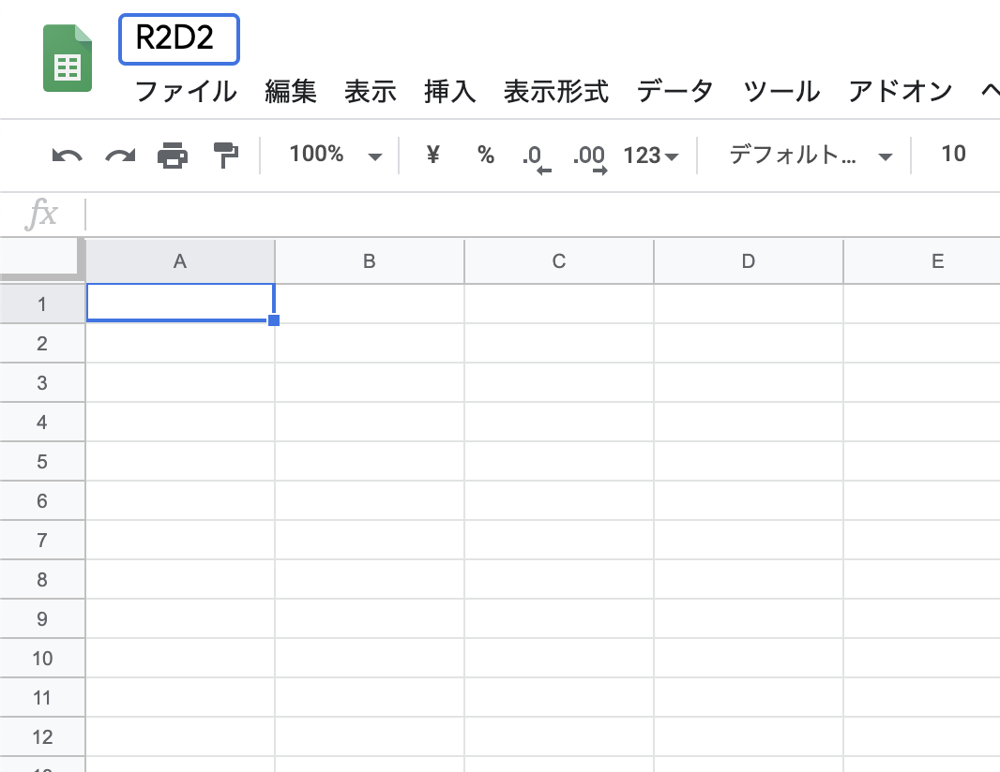
講習会ではR2D2としておく。

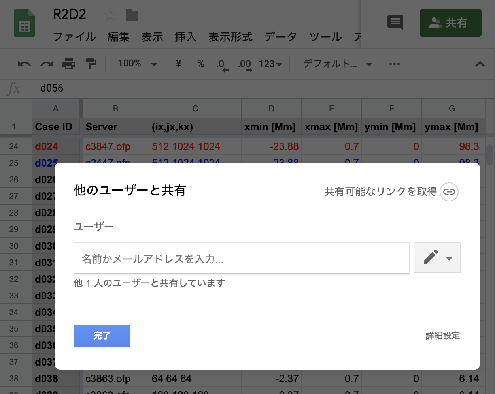
共有をクリックし、ダウンロードしたjsonファイルの中のclient_email行のEメールアドレスをコピーして、貼り付け。ここまでで、R2D2からGoogleスプレッドシートにアクセスできるようになる。
台帳の送信 (r2d2plus-ledger)
pyR2D2 を入れると、プロジェクトの全ラン (<project>/run/dNNN) の設定と状態を、データを読み込まずに
シートへ送るコマンド r2d2plus-ledger が入る。push・pull にだけ gspread と google-auth が要る
(pip install "pyR2D2[ledger]")。計算ノードでは動かさず、ログインノードか手元で使う。
r2d2plus-ledger status ~/work/proj/run # 各ランの状態と未送信 (UNSENT) の有無 (送らない)
r2d2plus-ledger export ~/work/proj/run -o ledger.csv
r2d2plus-ledger push ~/work/proj/run --dry-run # 書くセルを表示するだけ (Google に接続しない)
r2d2plus-ledger push ~/work/proj/run # シート名 = プロジェクト名 (proj)
r2d2plus-ledger pull ~/work/proj/run # シートで書き換えた目的などを 1 つずつ y/n で手元へ戻す
r2d2plus-ledger --help # 使い方 (サブコマンドごとにも --help がある)
表示・警告・エラーは英語で出る。端末に出すときだけ色を付け (緑 = 正常、黄 = 注意、赤 = 失敗)、 環境変数
NO_COLORがあれば付けない。シートの見出しと値 (状態・保存など) は日本語のままである。書くのはコードが管理する列のセルだけで、それ以外の列 (Note など) は人の列として読みも書きもしない。
送ると各ランの
data/param/ledger_sent.tomlに記録が残る。pyR2D2.Dataでそのランを開いたとき、 未送信の変更があればthe ledger has unsent changes: r2d2plus-ledger push …と 1 行出る (R2D2plus のランだけ)。列・単位・
pullで戻す項目などの決まりは R2D2plus の文書 (docs/manual/run_ledger.rst、非公開) にある。
最終更新日：Nov 02, 2026